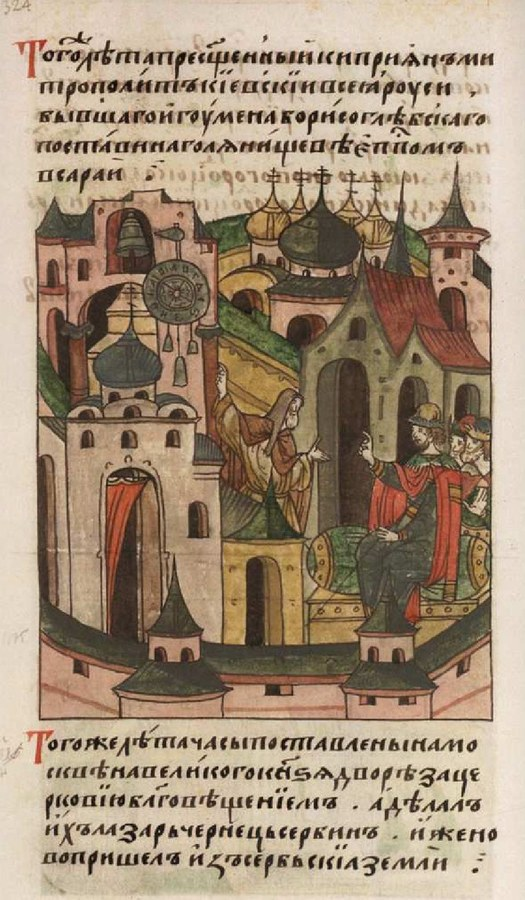

Vasily I of Moscow¶
Relations
Member of: Rurikids of Moscow
Rules: Grand Principality of Moscow (1389–1425)
Spouse: Sofija Vytautaitė (1391–…)
Vasily I of Moscow

Vasily I of Moscow · character — Image: Anonymous Russian illuminators (Facial Chronicle), Public domain via Wikimedia Commons¶

Type |
character |
Years |
1371–1425 |
Status |
Historical record |
Note |
Grand Prince of Moscow (1389–1425); son of Dmitry Donskoy and husband of Vytautas’s daughter Sophia. |
Summary¶
Vasily I Dmitrievich (30 Dec 1371 - 27 Feb 1425), Grand Prince of Moscow and Vladimir from 1389, son of Dmitry Donskoy, marries Sofija, Vytautas’s only recorded child, on 9 Jan 1391. He is a patient, wary son-in-law who fights Vytautas in 1406-08 and then makes peace on the Ugra, and names Vytautas guardian of his son Vasily II in his testament. In the saga he is a man who learned in the Horde that any morning might be his last, and sleeps with a knife under his pillow.
Appearance & tells¶
Tall, broad-shouldered, patient to the point of stubbornness, and unwilling to be pressed (Book III ch. 10). He grew up four years as a hostage among the Tatars, “among people who smiled at dinner and found their neighbours dead in the morning”, and since then sleeps like an animal in its den: his right hand lies under the pillow on the grip of a narrow, long knife with a blackened handle worn to the shape of his palm. His wife never asks why; she finds the knife on his deathbed in 1425 and lays it on his chest (Book IV ch. 15). When he dies the news goes first to the metropolitan, not to his wife.
Want · Need · Lie · Truth¶
Want (external) |
To enlarge Moscow (Nizhny Novgorod, Murom) and stay out from under both the Horde and his Lithuanian father-in-law. |
Need (internal) |
To be able to sleep without his hand on a weapon, that is, to trust one man not to turn on him. |
Lie they believe |
Every morning can be the last, and the people who smile at your table are the ones who will kill you. |
Truth they learn (or refuse) |
Peace with Vytautas can be made across the water: after the Ugra he trusts him enough to name him his son’s guardian. |
Arc by book¶
Book II (1388-1391). Weighed as a match at Grodno (ch. 4); marries Sofija in the Kremlin in January 1391 (ch. 8), a pawn’s match for both families.
Book III (1406-1410). Three wars with his father-in-law, ended when the two meet on opposite banks of the Ugra (ch. 10); in December 1409 his wife promises Vytautas that Moscow will not move while he fights the Order (ch. 13).
Book IV (1411-1425). Dies in the late winter of 1425 and tells the metropolitan first (ch. 15); his testament places Vasily II under Vytautas’s protection, and Sofija becomes regent.
Power & magic¶
Tier 0. No gift, no bargain and no contact with the Forces. His only “tell” is mortal fear, which is the Horde’s legacy; the saga uses Moscow as the cold stone city where Sofija’s amber bead chills, not as a place of magic. His line, through Vasily II, is where the Kęstutaičiai blood survives.
Record vs saga¶
[Historical record]: Born 30 Dec 1371; Grand Prince 1389-1425. Held as a hostage at Tokhtamysh’s court from 1383, escaped in 1386 and returned to Moscow. Married Sofija Vytautaitė on 9 Jan 1391 (Trinity Chronicle, after Grala citing Posilge; en.wikipedia’s “1392” is not followed) with Metropolitan Cyprian officiating. Took Nizhny Novgorod-Suzdal in 1393 and Murom; fought Vytautas 1406-08, ending in the stand-off on the Ugra (1408); Edigu burned Nizhny Novgorod and other towns in December 1408 but failed to take Moscow while Vasily was at Kostroma; resumed submission to the Horde in 1412. His 1423 testament named Vytautas guardian of Vasily II (b. 10 Mar 1415). He died on 27 Feb 1425, aged 53, leaving nine children by Sofija.
[The saga’s invention]: The knife under the pillow, the metropolitan told first, and the Ugra meeting as the two riders facing each other across the river (Book III ch. 10); Sofija’s marriage as a “pawn” and Moscow’s cold cathedral stone. The record says nothing of his sleeping habits or of his reaction to Vytautas’s offer of peace.
Pronunciation¶
va-SI-lij · IPA /vɐˈsʲilʲɪj/ · English sound-alike “vah-SEE-lee”. This is the Russian form (Vasily Dmitrievich); the Lithuanian text writes Vasilijus. Stress on the second syllable.
Appearances¶
Book II: ch. 4, 8, 20 and the afterword.
Book III: ch. 10 (the Ugra, strongest), 13, 28 and the afterword.
Book IV: ch. 1, 15 (his death) and the afterword.
He does not appear in Books I, V or VI; his son Vasily II does in Book V ch. 25.
Connections¶
graph LR
moscow["Grand Principality of Moscow"]
rurikids["Rurikids of Moscow"]
sofija["Sofija Vytautaitė"]
vasily1["Vasily I of Moscow"]
vasily1 -->|Rules| moscow
vasily1 -->|Member of| rurikids
sofija -->|Spouse| vasily1
style vasily1 stroke-width:3px